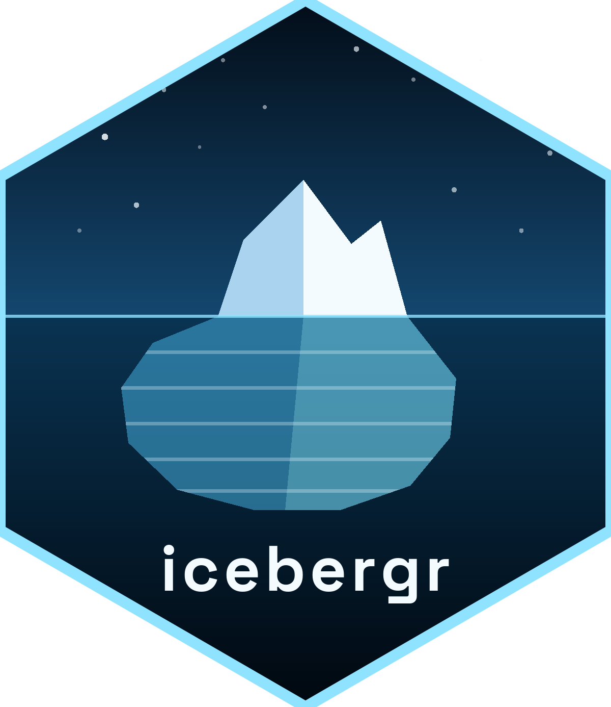

icebergr
Read, time-travel and append to Apache Iceberg tables, straight from R.
No Spark, no JVM, no SQL engine in the middle. 🧊
🔍 Read
library(icebergr)
tbl <- icebergr_example_table() # a real Iceberg table, built on your machine
icebergr_collect(icebergr_scan(tbl, filter = amount > 997, select = c("id", "event", "amount")))
#> # A tibble: 3 × 3
#> id event amount
#> <int> <chr> <dbl>
#> 1 1498 refund 998
#> 2 1499 purchase 999
#> 3 1500 refund 1000The filter runs inside Iceberg, which skips whole files before reading a byte:

⏳ Time travel and ✍️ appends
first <- icebergr_snapshots(tbl)$snapshot_id[[1]]
nrow(icebergr_collect(icebergr_scan(tbl, snapshot_id = first)))
#> [1] 500
tbl <- icebergr_append(tbl, head(icebergr_collect(tbl), 2)) # a new snapshot, nothing rewritten
nrow(icebergr_collect(tbl))
#> [1] 1002🚀 Setup
install.packages("icebergr")- Building from source (Linux, or the GitHub version)? Get Rust first:
curl --proto '=https' --tlsv1.2 -sSf https://sh.rustup.rs | sh - Put your token in
~/.RenvironasICEBERGR_REST_TOKEN=..., then connect:icebergr_table(icebergr_catalog("rest", uri = "https://your.catalog"), "db.events")
🗺️ What works
| ✅ Works | 🚫 Not yet | |
|---|---|---|
| Read | filter and column pushdown · merge-on-read deletes · struct, list, map
|
🦀 limit pushdown · 🦀 filters on nested fields |
| Time travel | by snapshot id or time · the schema as of any snapshot | |
| Write | append · create a table or namespace · register a table | 🚧 partitioned appends · 🦀 deletes, MERGE, overwrite |
| Catalogs | REST · local memory · ⚙️ AWS Glue · ⚙️ S3 |
🦀 Hadoop (use memory) |
⚙️ opt-in at build time · 🦀 missing in iceberg-rust itself · 🚧 not in this release · icebergr_spec_support() lists everything for your build.
⚠️ Good to know
| 🔑 | Credentials come from environment variables, never arguments, and never travel over plain http://. |
| 🆔 | Snapshot ids are character: they are 64-bit integers, and a double holds 53 bits. |
| 🔢 | Install bit64 so long columns stay exact past 2^53. |
| 🧵 | Parallel work: parallel::makeCluster(), not mclapply(), and connect inside each worker. |
| 🐢 |
limit applies after the scan. To read less, filter. |